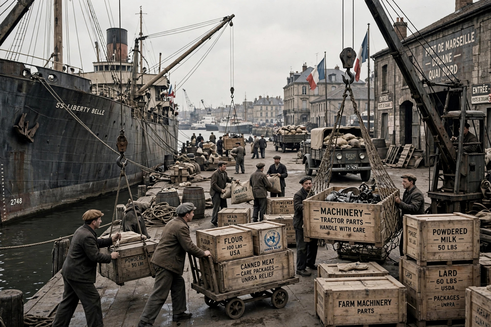

| Marshall Plan | |
|---|---|
 | |
| Official name | European Recovery Program (ERP) |
| Announced | June 5, 1947 (Harvard commencement address) |
| Enacted | April 3, 1948 |
| Total aid | Over $13 billion (roughly $150–170 billion in modern terms) |
| Administered by | Economic Cooperation Administration |
| Named for | George C. Marshall, U.S. Secretary of State |
The Marshall Plan (officially the European Recovery Program, ERP) was an American initiative enacted in 1948 to provide foreign aid to Western Europe. The United States transferred $13.3 billion in economic recovery programs to Western European economies after the end of World War II. Replacing an earlier proposal for a Morgenthau Plan, it operated for four years and represented a major element of the U.S. containment strategy against Soviet expansion.
By 1947, much of Europe lay in ruins: cities had been bombed, transport networks destroyed, and millions faced food shortages during the harsh winter of 1946–47. Britain and France were heavily indebted, and communist parties were gaining support in France and Italy. Secretary of State George Marshall outlined the plan in a commencement address at Harvard University on June 5, 1947, insisting that the initiative be a joint European program rather than a series of bilateral requests.
Congress passed the Economic Cooperation Act in April 1948, and President Harry S. Truman signed it into law. The Economic Cooperation Administration, headed by Paul G. Hoffman, coordinated the aid. Sixteen Western European nations formed the Organisation for European Economic Co-operation (OEEC) to allocate the funds. The largest recipients were the United Kingdom (about 26%), France (18%), and West Germany (11%). Most aid took the form of grants used to purchase American food, fuel, machinery, and raw materials; "counterpart funds" in local currencies financed infrastructure projects.
The Soviet Union, initially invited to participate, withdrew under pressure from Moscow and compelled its satellite states in Eastern Europe to refuse participation. The USSR answered with the Molotov Plan and the creation of Comecon, deepening the division of Europe that became a defining feature of the Cold War.
By 1952, when the program ended, the economies of participating nations had surpassed prewar levels; industrial production rose roughly 35% and agricultural output about 10% above prewar figures. Historians debate how much of this recovery the Plan caused directly — European recovery was already under way — but most agree it accelerated reconstruction, stabilized currencies, encouraged European integration, and anchored the transatlantic alliance that produced NATO in 1949. The Plan is frequently cited as one of the most successful foreign aid programs in history.
See also: Truman Doctrine · Berlin Blockade · European integration